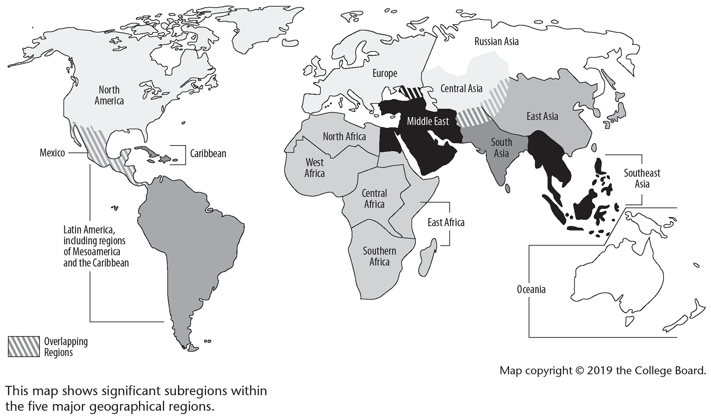

Why do events and processes in history happen?
Why do events and processes in history happen?Chapter 2
Concepts, Themes, and Key Terms
OVERARCHING CONCEPTS
1.HISTORICAL THINKING SKILLS
The AP® World History: Modern course and exam require you to understand and use six key historical thinking skills. This means that you’re being asked to think like a historian. As a result, you’re expected to approach the exam equipped to do the following. We’ll have more to say on these skills later.
SKILL 1. Identify and explain historical developments and processes.
Why do events and processes in history happen?
SKILL 2. Analyze sourcing and situation of primary and secondary sources.
Understand the point of view (POV) of documents.
SKILL 3. Analyze arguments in primary and secondary sources.
Explain why historians have different opinions about historical events.
SKILL 4. Analyze the context of historical events, developments, or processes.
Understand that history does not happen in a vacuum.
SKILL 5. Using historical reasoning processes (see below), analyze patterns and connections between and among historical developments and processes.
Make sense of history with connections that go beyond facts.
SKILL 6. Develop an argument.
Take a stand on historical issues using supporting evidence.
2.HISTORICAL REASONING PROCESSES
In reasoning like a historian, you hone an approach that shapes how you think. The following are the reasoning processes historians—and AP® World History: Modern exam candidates—use.
A.Comparison: Analyze similarities and differences between historical developments and processes.
B.Causation: Describe causes and effects of historical developments and processes and their significance; explain the context of historical developments.
C.Continuity and Change: Explain the significance of historical developments in patterns of change and continuity over time.
WORLD HISTORY: MODERN THEMES
Six themes run through the course. These themes are the broad ideas that connect events to the bigger picture of world history. Apply them to gain a deeper understanding, going beyond knowledge of historical facts.
Theme 1: Humans and the Environment
The ways the physical environment (rivers, mountains, weather, ecology, etc.) and humans interact. For example, many cities developed near rivers so the water could be used for crops and transportation.
Human population and its effects on the environment.
Theme 2: Cultural Developments and Interactions
Beliefs, religions, ideas, art and what they reveal about societies.
The political, social and cultural effects of interactions of these ideas between societies.
Theme 3: Governance
Different forms of government: their rise, maintenance, and decline.
How governments maintain order and exercise power.
Theme 4: Economic Systems
The societies produce, exchange, and consume goods and services, and the effects of same.
Theme 5: Social Interactions and Organization
How societies establish norms of behavior for groups and individuals, and how these norms change or stay constant over time.
The political, economic, and cultural interactions and influences of those norms.
Theme 6: Technology and Innovation
How human adaptation and innovation results in increased efficiency, comfort, and security and how technological advances have shaped human development with both intended and unintended consequences.
KEY TERMS
UNITS 1 AND 2 |THE GLOBAL TAPESTRY AND NETWORKS OF EXCHANGE: c. 1200 to c. 1450
1.CHINESE DYNASTIES—From well before the 13th century to the early 20th century, China was governed by a series of families that ruled for long periods. The Song Dynasty was important, declining in the late 13th century (see Chapter 4).
2.HINDUISM—The earliest known organized religion dating back some 4,000 years, with written codes of the faith and a class of religious leaders (priests). Hinduism was centered in South Asia. Hindu teachings supported the caste system that greatly influenced the political and social structure of South Asia.
3.BUDDHISM—A “reform” of Hinduism begun by Prince Siddhartha Gautama c. 500 BCE, who became the Buddha (“Enlightened One”). Unlike Hinduism, Buddhism supported spiritual equality and missionary activity. Its two most popular forms, Mahayana and Theravada Buddhism, spread far from its origins in South Asia into Southeast and East Asia along trade routes, bringing significant cultural effects that last to this day. Hindu- and Buddhist-dominated states, such as the Srivijaya Empire, arose in Southeast Asia.
4.CONFUCIANISM—In the 6th century BCE, the Chinese philosopher Confucius established clearly defined codes of behavior and gender and family duties. His teachings were a philosophy, not a religion dedicated to a deity. Over time, however, Neo-Confucianism emerged in East Asia. It included aspects of Buddhism and the ancient Chinese belief system Daoism, promising eternal reward for faithfulness to Confucian teachings. Neo-Confucianism became prominent during the Song Dynasty in China and spread to Japan and Korea.
5.ANIMISM/POLYTHEISM/SHAMANISM—The earliest known form of religion, animism, sees gods in nature (worshipping the sun, for example). It was popular among hunting-foraging bands. Animism is related to shamanism, in which a human guide engages in the spirit world to ask for rain, for example. Forms of animism remain today. Polytheism (“many gods”) differs from animism in that gods in polytheism have specific names and duties.
6.MONOTHEISM—Monotheism is the belief in one god. The Hebrews of Southwest Asia practiced one of the earliest known monotheistic religions, Judaism.
7.CHRISTIANITY—As Buddhism was to Hinduism, Christianity was a reform of an existing religion, Judaism. Jesus taught eternal salvation through the belief that he was the Jewish Messiah, sent by God to save humanity from eternal punishment. Over time, missionaries spread Jesus’s gospel (“good news”) throughout the Roman Empire and beyond. Christianity, Buddhism, and Islam spread globally and are the religions with the most followers today.
8.ISLAM—This religion was first preached in Arabia in the seventh century ce by the prophet Muhammad. Islam (“submission”) united many polytheistic Arab tribes into a common faith. By the mid-700s, it had spread rapidly through conquest and missionary activity via trade routes out of Southwest Asia across North Africa to Spain and eastward into northern India and Central Asia. Over time Muslim merchants carried Islam into Southeast and East Asia.
9.DAR AL-ISLAM—Across Afro-Eurasia, Dar al-Islam means “everywhere Islam is.” In the era c. 1200–c. 1450, this term described the territory extending from Spain and Northwest Africa all the way to South and Southeast Asia. Dar al-Islam was not a unified political empire, but a large region where Islamic faith and culture was dominant.
10.CALIPHATE—Unlike Christianity, Islam had no clear rules of succession after Muhammad. Culturally, Islam united many peoples, but politically, it fragmented into regional states called caliphates, each led by a caliph. The Abbasid caliphate ruled from Baghdad until it was sacked by the Mongols in 1258.
11.TURKIC PEOPLES—Central Asian nomadic peoples who had a common language family called Turkish. Their migrations into Southwest Asia beginning in the 10th century ushered in a period of political domination by Turkish groups such as the Seljuk and later the Ottomans that lasted until the 20th century. These Turkish groups converted to Islam and established regional states called sultanates, named after the leader of the Turkish group, a Sultan.
12.DIFFUSION OF RELIGIONS—Before 1450, three religions spread far outside their places of origin: Christianity, Buddhism, and Islam. Buddhism and Christianity were spread by missionary monks. Conversions to Christianity and Islam were also done by “sword mission,” meaning by force. Like Buddhism and Christianity, Islam was also spread peacefully by merchants along trade routes.
13.SYNCRETISM IN RELIGIONS—A global religion must be flexible enough to adapt to local customs as it spreads. Many examples of the global diffusion of religion exist: when Buddhism spread into East Asia, the Buddha became a god-like provider of eternal salvation; as Islam spread into parts of South Asia, it adopted some Hindu features and turned toward mysticism with Sufism; some forms of Christianity in the New World adopted traditional gods and made them part of the pantheon of saints.
14.THE SILK ROADS—A must-know trade route, the Silk Roads connected East Asia to northern India and central Asia and, indirectly, to the Mediterranean region, West Africa, and northern Europe. Silk, tea, spices, belief systems, and technology were carried westward along caravan routes. Chinese goods and technology made their way into southwest Asia, Africa, and Europe.
15.INDIAN OCEAN TRADE NETWORK—Connected to the Silk Roads, the Indian Ocean trade network was just as important, but with routes over water. Ships tended to carry heavier bulk items than were transported on the Silk Roads—for example, lumber and pottery. African, Arab, Jewish, and Chinese (both Muslim and Christian) merchants transmitted religion (especially Buddhism and Islam) and exchanged silver, cotton, spices, and many other items across the Indian Ocean. Seasonal monsoon winds aided sailing ships in the Indian Ocean.
16.TRANS-SAHARAN TRADE—The trade of goods, people, and faith across North Africa’s Sahara desert peaked in the 8th to the 16th centuries. Gold, salt, animal hides, and slaves were among the main items transported by camel from Africa to points east and north. Muslim merchants imported camels into the region; they also brought their faith in Islam, which spread rapidly into North and West Africa. Three important West African trade centers along these trade routes were Djenné, Goa, and Timbuktu.
17.WEST AFRICAN KINGDOMS—Muslim West African kingdoms like Mali facilitated exchanges between Africa, Europe, and Asia. Mali was a center for gold and salt trade. Its most famous leader was Mansa Musa, who traveled to Mecca in a fabulously rich caravan in the 14th century.
18.BYZANTINE EMPIRE—Based in Constantinople, this empire, which traced its beginnings back to the classical Roman Empire, had major economic, social, and political influence over southern and eastern Europe, the Eastern Mediterranean, and Southwest Asia until it was conquered and ended by Muslim forces in 1453. Culturally, it was the center of Orthodox Christianity, one of the major branches of the faith.
19.ETHIOPIA—One of the greatest African empires, founded in East Africa, and largely Christian. It had many connections to Christian European and Muslim interests beginning before c. 1200 and continuing today.
20.MONGOLS—“Agents of change” or “an unstoppable tide of horror”—both definitions accurately describe the Mongols. In the 13th century, Mongol forces invaded south China and rode west all the way into Russia and Southwest Asia. After usually brutal conquests, they established a Pax Mongolica: peace and trade throughout their territories, which was the largest land empire ever established. The united Mongol empire was short-lived, however, and even the khanates that splintered from it faded in political power by the 15th century.
21.BUBONIC PLAGUE—The bubonic plague, also known as the Black Death, is arguably history’s most infamous disease. Possibly originating along the trade routes near the Black Sea, it spread east and west during the age of the Mongol conquests, killing millions. Striking in the mid-14th century, the bubonic plague is widely believed to have wiped out as much as one-third of the population of Europe, China, and Central Asia.
22.MAYAN STATES—The Mayan States were centered in Mesoamerica (Southern Mexico and part of Central America). Mayans had cities with tall stone buildings, a written language and a complex society. Its government fell in the 10th century, but its culture—especially its religion and spoken language—continued for centuries more.
23.COERCED LABOR—Includes slavery, serfdom, the corvée (government-required labor on public works projects), and indentured servitude. Forms of coerced labor existed across all civilizations and time periods.
24.FEUDALISM—A system in western Europe and Japan in the era c. 1200–c. 1450, in which people were bound to the land and served as agricultural workers for landowners. Regional armies fought over land rights at the bidding of their local lords. In Europe, the unfree workers were called serfs, elite warriors were knights; in Japan, warriors were called samurai.
25.ZHENG HE—Representing the power of the Ming dynasty, the explorer Zheng He led enormous expeditions that included huge treasure ships and thousands of sailors. His fleets crossed the Indian Ocean and traveled to the Spice Islands of Southeast Asia in the early 15th century.
UNITS 3 AND 4 |LAND-BASED EMPIRES AND TRANSOCEANIC INTERCONNECTIONS, c. 1450 to c. 1750
26.LAND-BASED EMPIRES—In this era, many significant empires arose that were primarily connected by land, not sea. Armies used gunpowder, a Chinese invention, to expand with force. These included the Qing (Manchu) dynasty in Central and East Asia, Russia in Eastern Europe and Asia, the Mughal and Ottoman Empires (see below), and the Safavids in the Middle East.
27.INCA AND MEXICA (AZTEC) EMPIRES—Centered in the Andes Mountains in western South America, the Inca civilization was built on previous cultures. Their empire extended along the western coast, a result of both conquest and diplomacy. Pivotal to Incan economic strength was the mit’a system, which imposed forced labor on indigenous peoples. This system allowed for the creation of a massive mandatory public works program that made possible an extensive road network, construction of public buildings, and later, under the Spanish, mining (see entry No. 33). Its influence peaked in the 15th century but declined rapidly when Spanish conquistadors arrived in the early 16th century. Similarly, the Mexica (Aztec) empire was built upon features of earlier cultures, like the Maya, and fell after the arrival of the Spanish. Its capital was located in central Mexico.
28.EUROPEAN EXPLORATIONS—Seeking an increase in the trade of spices, silk, and other goods from East and Southeast Asia, kings from new European nations sent expeditions around Africa into the Indian Ocean and also across the Atlantic Ocean. Started by Portugal, then Spain, France, Britain, and the Netherlands (a.k.a. the Dutch), these explorers initiated the first truly global contacts and ushered in the rise of European influence around the world.
29.COLUMBIAN EXCHANGE—Columbus’s expeditions to the Americas triggered exchanges of plants, animals, technology, and diseases globally. (This term is a key definition in the global scope of AP® World History: Modern.)
30.ATLANTIC WORLD—The Atlantic World includes the people, politics, religions, goods, and ideas that crossed back and forth on the Atlantic Ocean after Columbus’s journeys connected Europe, Africa, and North and South America. This term is especially important in the years 1450–1900.
31.MERCANTILISM—The west European governments of Portugal, Spain, Britain, France, and the Dutch expanded their new maritime empires into worldwide power because of the Columbian Exchange. Each established mercantilism as an example of economic nationalism. Under mercantilist policies, nations developed colonies in the Americas and Asia and used them to provide raw materials such as sugar, furs, silver, and lumber. These products were then processed and sold by companies from the owner (mercantilist) nation all over the world. Each nation competed to amass as many colonies as possible as a sign of economic and political power. Silver mining and trade were the foundation of mercantilist system.
32.ATLANTIC SLAVE TRADE—European mercantilists needed many workers on their large Caribbean sugar plantations. These laborers were found mainly in West Africa, where trade in humans connected the Asante (Ashanti) and Kongo kingdoms with the Atlantic World. From the 16th to the 19th centuries, millions of people were shipped across the Atlantic in the so-called middle passage. As a result, great demographic changes occurred in both Africa and the New World.
33.ENCOMIENDA AND MIT’A SYSTEMS—The encomienda system was a Spanish land-use practice in its American colonies and the Philippines. Spanish settlers were granted tracts of land and permitted to use the native people already living on that land as indentured servants. The mit’a system was a form of labor (e.g., road building) required by the Incan government, and adopted by the Spanish for gold mining.
34.MUGHAL EMPIRE—This Muslim territory in South Asia ruled from the mid-16th to the 19th centuries. One of its famous leaders was Akbar. Religious tolerance was one of its practices. The Taj Mahal was built during its reign. Mughal leaders claimed to be descended from the Mongols, from which the name “Mughal” derived.
35.PRINTING PRESS—Developed in China c. 500 CE, printing technology moved along trade routes, arriving in Germany by the 15th century, where it spread rapidly across Europe. The printing press helped disseminate the tenets of the Reformation and significantly changed human communication.
36.OTTOMAN EMPIRE—Expanding from Southwest Asia into parts of North Africa and Eastern Europe, this Muslim empire survived from the 13th century to the early 20th century. Ottoman Turks ruled this large empire, an important political, social, and economic conduit for Western Europe, Africa, and East Asia.
37.DIASPORIC AND INDIGENOUS CULTURES—“Diasporic” is a fancy term for “scattered.” Refugees, missionaries, and merchants set up communities in faraway places, such as Jewish merchants from Southwest Asia in China. Indigenous peoples are those who were “there first,” like the peoples living in Australia before Europeans arrived.
38.URBANIZATION—Refers to cities: their importance, growth and decline. Cities were and remain centers of government, religion, trade, education, and the arts.
UNITS 5 AND 6 |REVOLUTIONS AND CONSEQUENCES OF INDUSTRIALIZATION, c. 1750 TO c. 1900
39.INDUSTRIALIZATION—The Industrial Revolution began in Britain in the mid-18th century and was a major part of the West’s enormous social changes and economic and political expansions in the nineteenth century. It marks the shift from slow hand-made to rapid machine-made production. Industrialization spread to Russia, South and East Asia, and North and South America by the end of the 19th century.
40.THE ENLIGHTENMENT—Like the Industrial Revolution, the Enlightenment was a western European development that had tremendous global impact. With foundations in scientific study and intellectual reason, its basic tenets included individual rights such as freedom of speech and participation in government. It greatly influenced the American and French Revolutions, which then inspired political revolutions around the world.
41.CAPITALISM—An offshoot of the Enlightenment and strongly attached to the Industrial Revolution, capitalism is an economic system based on individual economic development. Private investors use their money (capital) to invest in potentially profitable activities. Scotsman Adam Smith was an important proponent of capitalism. The industrialized nations of the early 21st century hang their economic hats on capitalism to varying degrees.
42.MARXISM—In the mid-19th century, Karl Marx proposed an alternative to capitalism in an attempt to close the gap between the rich and poor in industrial western Europe and later, he hoped, the world. Marxism advocates that the many poor should unite and overthrow the few rich, and establish a political and economic system where the government controls production and labor to benefit the masses.
43.NATIONALISM—The belief that people with similar cultural backgrounds rightly belong together in one nation. It became popular in western Europe in the 19th century and spread globally, leading to many wars for independence, most notably in Latin America, and against Ottoman and Austrian rule in Eastern Europe.
44.LIBERALISM—Inspired by the Enlightenment in the 19th century, this political philosophy called for written constitutions, increased voting rights, equality for all and economic freedom. It fueled many revolutions in the Americas and Europe.
45.AGE OF REVOLUTIONS—During the mid-19th-century “Age of Isms” in western Europe (see entry Nos. 41 through 44), many revolutions seeking political and social change occurred, inspired by the ideas of the Enlightenment and the French Revolution. In Latin America, most countries successfully revolted against European political control.
46.IMPERIALISM—In the 19th century, western Europe’s economic and industrial power made it the world’s strongest political force, and its nations accumulated colonies all over the world. Russia, Japan, and the U.S. also participated. A famous quotation that reflects the national pride that accompanied imperialist expansion was, “The sun never sets on the British Empire.” At its peak, Britain claimed colonies in half of Africa and much of South and Southeast Asia.
47.SOCIAL DARWINISM—Connected to strong nationalist ideas, Europe’s political and industrial superiority led to the belief that it was socially and morally superior to the peoples it conquered. Charles Darwin’s “survival of the fittest” scientific theory in the animal world was applied to non-European peoples around the globe.
48.RESISTANCE TO WESTERN HEGEMONY—“Hegemony” is dominance or control. Resistance in Asia and Africa to European imperialism was widespread. For example, the Chinese tried to stop Britain’s importation of opium; anti-colonial rebellions broke out in Africa; and in India, the National Congress promoted self-rule.
49.MEIJI RESTORATION—To compete with the West’s industrial and political power, Japan embarked upon the Meiji Restoration, reorganizing its government in the late 19th century. The emperor’s power was reestablished, and Japan westernized its industrial base and its society.
50.19TH-CENTURY MIGRATIONS—The Industrial Revolution included improvements in transportation that made ocean travel safer and cheaper. Pushed by revolutions and poor living conditions, and pulled by stories of opportunities, millions—especially Europeans but also South and East Asians—migrated to North and South America in the 19th century.
51.INDENTURED SERVITUDE—A form of coercive labor where a person exchanges his or her work for a period of time—usually a few years—for transportation and necessities, without other pay. After the term of indenture was completed, the laborer was supposed to be freed. Indentured servitude was a factor in migrations to the Americas in the 17th and 18th centuries, but was replaced by slavery. By the end of the 19th century, slavery in the West had ended and indentured servitude returned. In that era, thousands of South Asians migrated to South Africa and the Caribbean as agricultural indentured servants. East Asians were also employed as indentured servants in the Americas.
52.OPEN DOOR POLICY—In the early 20th century, the U.S. flexed its new global muscles by gaining approval for a plan that the U.S., Japan, and the European powers shared open access to trade with China. The weak Chinese government could not resist the economic and political pressure of these nations. The Open Door Policy was a sign of the “arrival” of the U.S. in global affairs.
53.“SECOND” INDUSTRIAL REVOLUTION—The “first” Industrial Revolution involved the mechanization of agriculture and textiles, but in the last half of the 19th century, its focus changed to innovations in electricity (telephone and radio), chemistry (fertilizers), transportation (cars and airplanes), and steel (skyscrapers and modern weapons). These developments continued to influence the rapid social and economic changes in the West into the 20th century.
UNITS 7, 8, AND 9 |GLOBAL CONFLICT, COLD WAR AND DECOLONIZATION, AND GLOBALIZATION, c. 1900 TO THE PRESENT
54.THE WORLD WARS—The first half of the 20th century saw two enormous wars among the “Great Powers” of Europe, Asia, and the U.S. One cause was the massive military production made possible by the Industrial Revolution and by global competition for territories during the Age of Imperialism. In an AP® World History: Modern context, World Wars I and II can be seen as one long global war with a 20-year break between the two. The results of the wars were the decline of western Europe and the rise of the power of the U.S. and Soviet Union in the second half of the 20th century.
55.THE GREAT DEPRESSION—Between the two World Wars, a global economic disaster struck the industrialized nations around the world. After World War I, the U.S. had the world’s largest economy; when it failed in the late 1920s, the economies of much of the rest of the world, already reeling from the effects of World War I, were severely affected. Two major results were the rise of authoritarian governments (see entry No. 56) and the outbreak of World War II.
56.AUTHORITARIANISM—One result of the catastrophe of World War I was a rejection of democratic forms of government in parts of Europe and Asia, namely, Germany, Italy, Russia, and Japan. Single-party rule led by a strongman with dictatorial powers was thought to be a more efficient system than democracy. Communism and fascism were the best-known examples of such governmental systems. The growing military aggression of the fascist governments was a cause of World War II.
57.COMMUNISM—Communism was originally proposed by Karl Marx from Germany in the mid-19th century and put in place by Vladimir Lenin in Russia in the early 20th century. In this economic and political system of socialism, the government (the state) directs the economy (e.g., the Soviet Union’s Five-Year Plans) and promises to provide services for all. Authoritarianism was often the method of rule in communist systems. Communism spread around the globe in the 20th century and competed directly with capitalist societies.
58.DECOLONIZATION—A major global development after World War II was the end of Europe’s colonial empires around the world. Colonies in South Asia, Southeast Asia, and Africa regained their independence some peacefully, others through violence. The new independent states often faced significant social, economic, and political challenges.
59.PARTITION—The largest British colony, India, partitioned (split up) itself along religious lines when it gained independence in 1947, forming India (with a Hindu majority) and Pakistan. In 1971, East Pakistan separated from Pakistan to become Bangladesh (both with Muslim majorities). For many decades afterward, Pakistan and India were major rivals in South Asia.
60.COLD WAR—The dominant global conflict after World War II, the Cold War was conducted between the U.S. (and its allies) and the Soviet Union (and its allies). The aim for each side was to keep the other from increasing its political and economic influence globally. It was called the Cold War because the two sides did everything to prepare for a real “hot” war (with real weapons) except actually fight each other directly. This led to proxy wars like the Korean War, the Angolan Civil War, and the Sandinista-Contras Conflict in Nicaragua. Massive accumulation of nuclear and other forms of weapons threatened mutually assured destruction, but when the Soviet Union fell apart in the late 20th century, the Cold War ended.
61.MULTINATIONAL OR TRANSNATIONAL CORPORATIONS—A multinational or transnational corporation does business in more than one country. The British and Dutch East India companies of the 18th century were early examples, but it was after World War II that this business model became common. Today, Exxon Mobil, Toyota, and General Electric are prominent multinational corporations.
62.PACIFIC RIM—In the second half of the 20th century, strong economies developed on both sides of the Pacific. Although the U.S. was a major economic power in the region, the term usually refers to the economies based in nations such as China, Japan, Australia, South Korea, and Singapore.
63.CHINESE REVOLUTIONS—In the early 20th century, a revolution in China against the emperor led to a limited democracy. After World War II, communists led by Mao Zedong overthrew that government. Vast social, political, and economic changes resulted as the government took control of the national economy through the Great Leap Forward in 1958. The result was to choke the economy and cause millions of deaths from starvation, execution, torture, forced labor, and suicide. Until the late 20th century, communist China was relatively isolated from global economic involvement, but after Mao’s death, China opened its economic system to allow capitalist development, and its economy boomed.
64.APARTHEID—Apartheid was a political and social policy in South Africa in the mid-20th century that separated whites and blacks and that granted the white minority many rights that the black majority was denied. The apartheid policy was reversed in the late 20th century after decades of global pressure, and majority rule was established.
65.FEMINISM—Although its roots extended back to the Enlightenment (see entry No. 40), feminism was largely a 20th-century movement dedicated to increasing the political, social, and economic rights of women. It began in Western democracies and expanded to include much of the world by century’s end. Counterexamples persisted in parts of the Middle East, Africa, and Asia.
66.GLOBALIZATION—“Globalization” describes the “shrinking world” that resulted from increased economic and communications connections. While the term could be applied to world systems after Columbus’s voyages (see entry No. 29) or to the Age of Imperialism (see entry No. 46), it became especially popular in the late 20th century. Not everyone was content with the process of globalization.
World Regions in AP® World History
